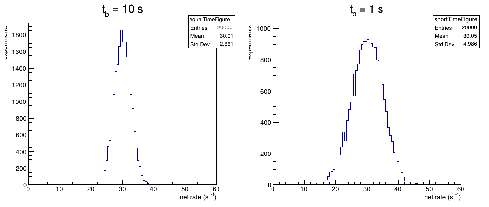

源和本底测量时间的分配
本底需要单独测量。缩短本底测量时间不会改变本底率的期望值，却会增大扣除后的统计误差。
本底扣除
含源测量时间为 \(t_s\)，得到计数 \(N_{s+b}\)；本底测量时间为 \(t_b\)，得到计数 \(N_b\)。净计数率估计为
\[
\hat r_s=\frac{N_{s+b}}{t_s}-\frac{N_b}{t_b}.
\]
两次测量相互独立并服从 Poisson 分布时，统计方差为
\[
\sigma^2_{\hat r_s}
=\frac{N_{s+b}}{t_s^2}+\frac{N_b}{t_b^2}.
\]
比较两种测量时间
下面保持含源测量时间 \(t_s=10\ \mathrm{s}\) 不变，分别取 \(t_b=t_s\) 和 \(t_b=t_s/10\)。重复模拟测量，可以直接看到本底测量时间对净计数率分布宽度的影响。
TRandom3 rng(12345);
double sourceRate = 30.0;
double backgroundRate = 20.0;
double sourceTime = 10.0;
TH1D equalTime("equalTime", "t_{b} = 10 s;net rate (s^{-1});experiments",
100, 0.0, 60.0);
TH1D shortTime("shortTime", "t_{b} = 1 s;net rate (s^{-1});experiments",
100, 0.0, 60.0);
for (int trial = 0; trial < 20000; ++trial) {
int sourceAndBackground = rng.Poisson(
(sourceRate + backgroundRate) * sourceTime); // 由期望值产生 Poisson 计数
int backgroundEqual = rng.Poisson(backgroundRate * 10.0);
int backgroundShort = rng.Poisson(backgroundRate * 1.0);
equalTime.Fill(sourceAndBackground / sourceTime
- backgroundEqual / 10.0); // 按测量时间换算为计数率
shortTime.Fill(sourceAndBackground / sourceTime
- backgroundShort / 1.0);
}
TCanvas c("c", "background subtraction", 1000, 450);
c.Divide(2, 1);
c.cd(1); equalTime.Draw();
c.cd(2); shortTime.Draw();import ROOT
rng = ROOT.TRandom3(12345)
source_rate = 30.0
background_rate = 20.0
source_time = 10.0
equal_time = ROOT.TH1D(
"equal_time", "t_{b} = 10 s;net rate (s^{-1});experiments",
100, 0.0, 60.0)
short_time = ROOT.TH1D(
"short_time", "t_{b} = 1 s;net rate (s^{-1});experiments",
100, 0.0, 60.0)
for trial in range(20000):
source_and_background = rng.Poisson(
(source_rate + background_rate) * source_time) # 由期望值产生 Poisson 计数
background_equal = rng.Poisson(background_rate * 10.0)
background_short = rng.Poisson(background_rate * 1.0)
equal_time.Fill(source_and_background / source_time
- background_equal / 10.0) # 换算为计数率
short_time.Fill(source_and_background / source_time
- background_short / 1.0)
canvas = ROOT.TCanvas("canvas", "background subtraction", 1000, 450)
canvas.Divide(2, 1)
canvas.cd(1); equal_time.Draw()
canvas.cd(2); short_time.Draw()
在这些设定下，使用期望计数估算可得：\(t_b=10\ \mathrm{s}\) 时误差约为 \(2.65\ \mathrm{s}^{-1}\)，而 \(t_b=1\ \mathrm{s}\) 时约为 \(5.00\ \mathrm{s}^{-1}\)。本底测量过短时，放大后的本底涨落会主导扣除结果。